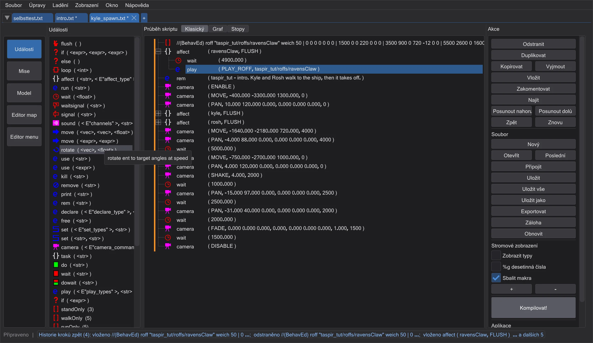
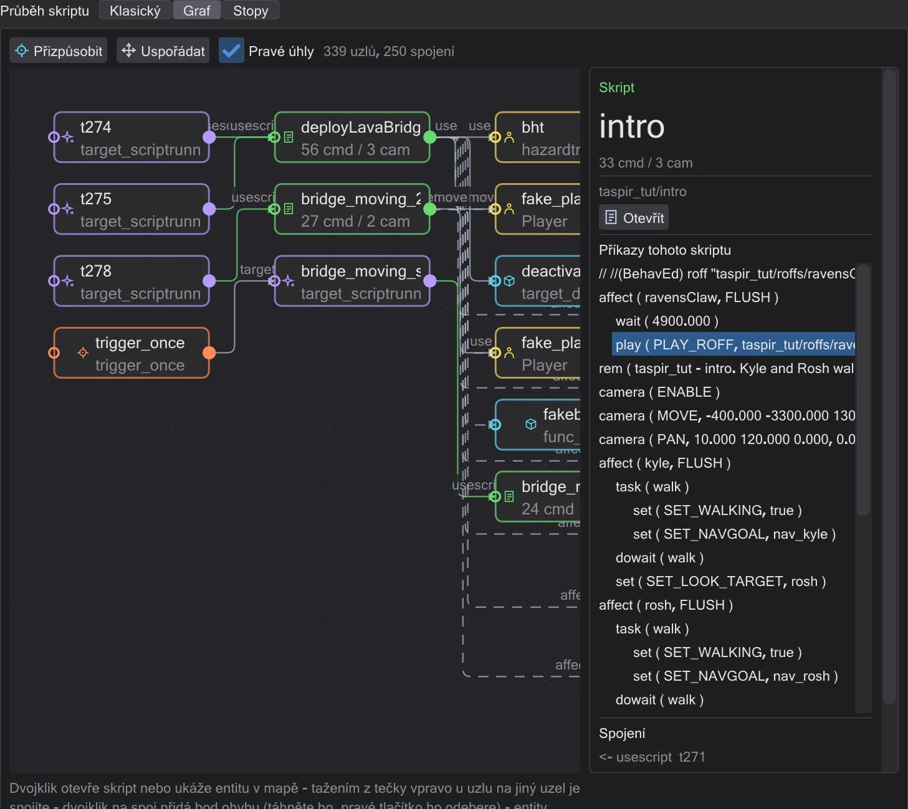
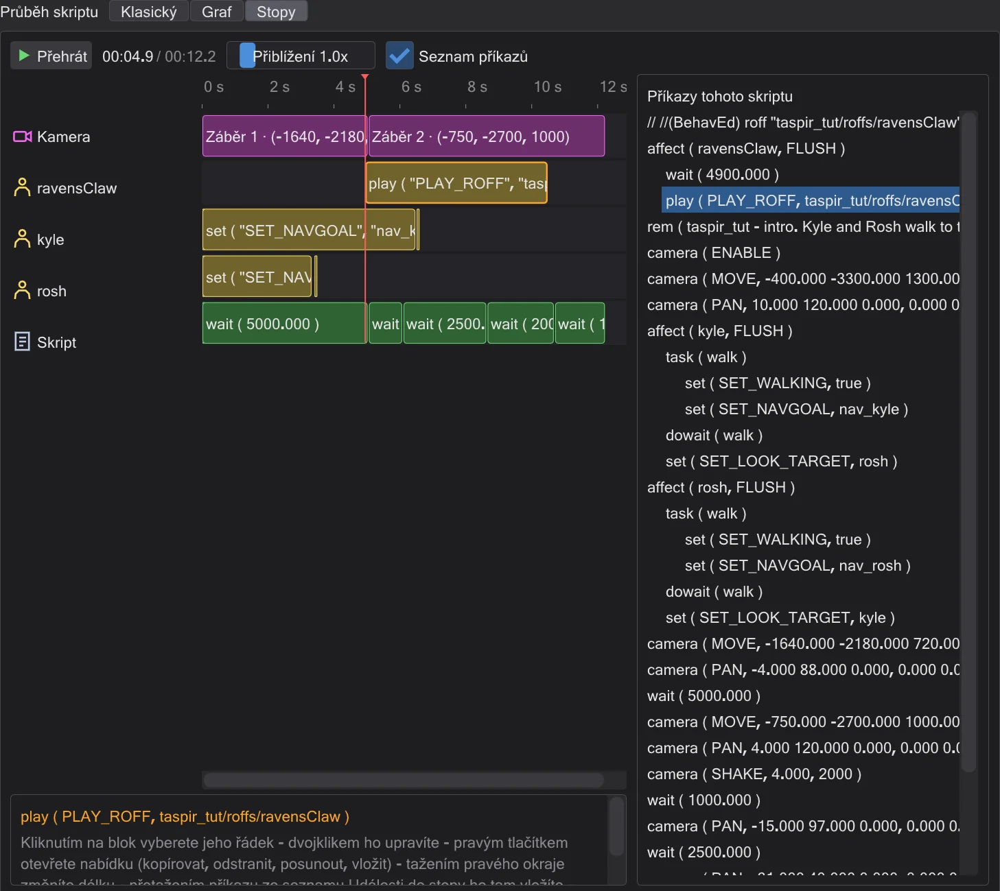
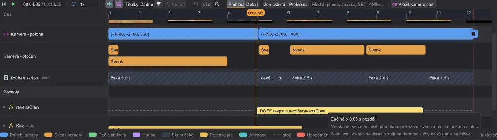
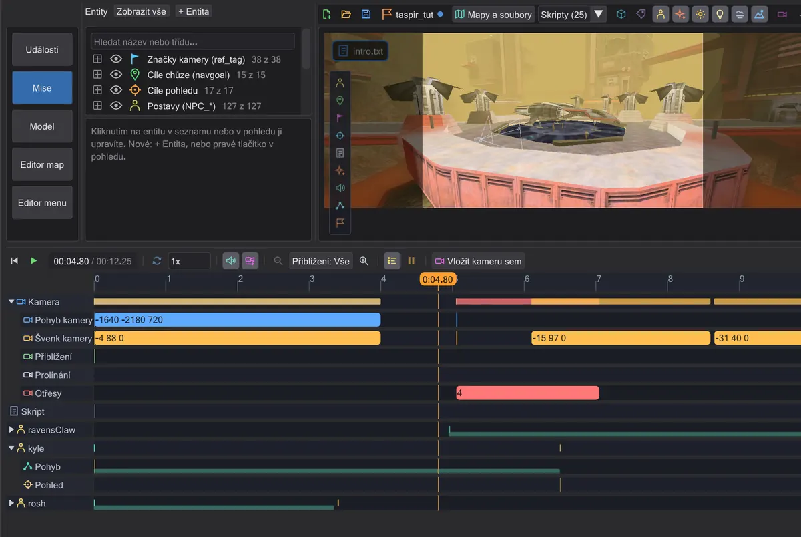
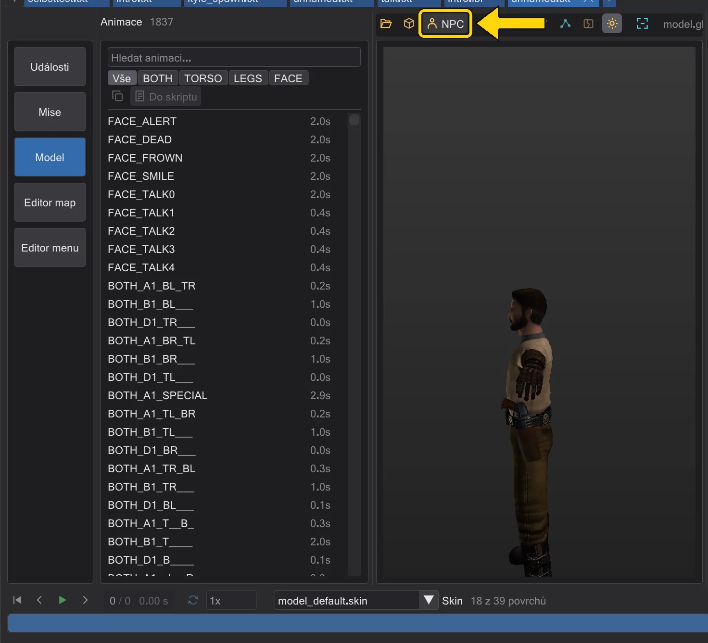

Co JK Studio umí
Prohlídka celého programu: psaní skriptů, jejich zobrazení v mapě, kamery, postavy, animace, mise a nástroje kolem.
JK Studio píše skripty ICARUS - skripty za každou animační sekvencí a každým skriptovaným okamžikem Jedi Academy a jejích modů. Píše je přesně jako původní BehavEd od Raven, soubor po souboru, a pak vám ukáže, co dělají: v mapě, ve 3D, v čase. Každá část níže odkazuje na tutoriály, které ji procvičují.
Psát skripty jako v originálu#

- Každý příkaz hry v jednom seznamu - přidáte ho dvojklikem, přetažením nebo klávesou Insert. Tři způsoby, jak přidat příkaz
- Každá hodnota ve vlastním poli: seznamy povolených hodnot, jména vybraná z mapy, zvuky, které lze přehrát, výrazy s
get,tagarandom. Změna hodnot příkazu - Kopírujte, přesouvejte, zakomentujte, vraťte každý krok - i jediný krok ze středu historie. Přesun, kopírování a zakomentování řádků, Vrátit cokoli - i jeden krok ze středu
- Kompilace do
.ibi, které hra spouští, s jasnými zprávami, které skočí na špatný řádek. Kompilace a oprava chyb - Každý příkaz a každé pole
SET_vysvětleno: Každý příkaz.
Tři pohledy na tentýž skript#




Klasický je strom originálu. Graf ukazuje misi jako uzly - start hráče, spouštěče, postavy, skripty - a umožňuje je spojovat tažením. Stopy rozloží skript v čase, s kamerou, každou postavou a dialogem v řádcích. Průběh skriptu: Klasický, Graf, Stopy, Připojit postavu ke skriptu
Mapa ve 3D - jak ji kreslí hra#

Mapy se načítají přímo ze souborů .pk3 hry, s jejich shadery, lightmapami, mlhou, září, efekty, portály oblohy a zrcadly. Prolétejte jimi, dívejte se shora, ukládejte pohledy na číselné klávesy. Umisťujte entity dlaždicemi, táhněte a otáčejte je na mřížce, upravujte každý klíč v inspektoru. Mapa, Umisťování, posouvání a otáčení entit, Úprava klíčů entity, Podívat se na mapu shora
Kamery, které vidíte a můžete proletět#
 Animace
AnimaceKaždý camera ( MOVE ) a PAN je záběr v mapě se svou dráhou. Posouvejte a otáčejte záběry gizmem, umístěte je tam, kam se díváte, nebo se usaďte v záběru a proleťte ho v režimu pilota. Zoom, zatmívání, otřesy a sledování se v pohledu přehrávají přesně jako ve hře. Kamera, Proletět záběr kamery sami, Umístit záběr tam, kam se díváte, Přiblížení, zatmívání do černa a otřesy
Postavy, které chodí po svých drahách#

Postavy se objevují se svými skutečnými modely a animacemi a chodí tam, kam je skript pošle. Jejich dráhy mají úchyty: táhněte cíl chůze, vložte bod uprostřed chůze, přepněte chůzi, běh nebo chůzi pozpátku, nastavte, kam se postava dívá a kam je natočená. Postavy a dráhy, Chůze, běh nebo chůze pozpátku, Nechat postavu dívat se na někoho, Otočit postavu v daném okamžiku
Časová osa pro celou scénu#

AnimacePřehrajte scénu se zvukem, libovolnou rychlostí. Každý příkaz je blok v čase - táhněte ho a vše po něm se posune s ním, táhněte jeho okraj a změníte délku. Časová osa, Přečasovat animační sekvenci na časové ose
Animace: příkazy move a soubory ROFF#

AnimaceNastavte klíče v čase pro dveře, plošinu nebo loď. behaved je zapíše jako příkazy move nebo sestaví soubor ROFF a vlastní soubory ROFF hry převede na klíče, které můžete měnit - jako kopii, originálu se nedotkne. Animace moverů a soubory ROFF, 5 · Loď vzlétá, Dveře, které se otevírají, Změnit soubor ROFF hry
Mise: od ničeho k .pk3#

Začněte misi na libovolné mapě jedním kliknutím, otevřete mise hry nebo modu, pokračujte v nich z jejich složky. Uložit misi vše zkontroluje, zkompiluje každý skript a zabalí jeden .pk3 s mapou, entitami, skripty a soubory ROFF - připravený pro devmap. Sítě navigačních bodů NPC se po cestě vytvoří a zkontrolují. Mise, Vlastní mise: vzlet na Taspiru, Dát NPC cesty k chůzi
Modely postav a jejich animace#

Každá postava hry se svým skinem, každá animace se svými snímky - kliknutím ji přehrajete, dvojklikem ji vložíte do skriptu. Zobrazení modelu a postavy, Nechat postavu přehrát animaci, Prohlédnout si model postavy
Nástroje kolem#
- Najít a nahradit v jednom skriptu nebo ve všech otevřených. Najít a nahradit ve všech otevřených skriptech
- Karty, záložky a rozdělené zobrazení pro porovnání skriptů a kopírování napříč. Záložky a rozdělené zobrazení
- Zálohy při každém uložení, složka záloh, vrácení libovolného příkazu do původního stavu. Ukládání, kompilace, kontroly
- Šest jazyků, šest motivů, libovolná velikost rozhraní, každou zkratku lze změnit. Nastavení a aktualizace, Klávesové zkratky
- Vyhledává aktualizace a instaluje je. Aktualizace a seznam změn